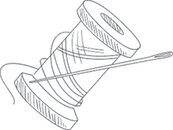

Premium Cotton Yarn
Combed, compact and organic yarns spun from long-staple Indian cotton, Ne 20s to 120s.
India’s home for luxury yarns and fabrics: cotton, silk, wool, zari and handloom, woven with heritage and delivered worldwide.
For over three decades Rajvastra has connected India’s finest spinners, dyers and weaver families with designers, fashion houses and mills across the world. We curate and produce yarns and fabrics that honour tradition and meet modern specifications.
Textile advisors
+91 98765 43210

Trusted by 2,000+
designers and mills
Rajvastra
Combed, compact and organic yarns spun from long-staple Indian cotton, Ne 20s to 120s.

Bivoltine mulberry, tussar and eri silk yarn, reeled, twisted and degummed in-house.

Superfine merino, lambswool and cashmere blends for shawls, knits and winter fabrics.

Real and tested zari, kasab, badla and tilla threads for brocade and embroidery.

Breathable mulmul, jamdani, ikat and kota doria handwoven by artisan clusters.

Ajrakh, dabu, bagru and indigo vat-dyed cottons, printed with hand-carved blocks.

Flax linen and hand-spun khadi in washed, breathable weights for modern wardrobes.

Can’t find what you need? We develop custom yarns and fabrics. View Full Collection

Happy clients
Every lot begins with fibre we can trace to a farm, a reeling unit or a shearing season, then passes through three in-house quality gates before it ever reaches a loom.


Our Advantage

Every lot is traced to its farm, reeling unit or shearing season.

Indigo, madder and harda dyeing with responsible water handling.

Handloom partnerships in Varanasi, Phulia, Bagru and beyond.

Three in-house quality gates before dispatch.

We pair hand-weaving clusters with modern spinning, dyeing and testing so you get artisanal character with consistent, certifiable quality.
Years of heritage
Three generations of mill and weaver relationships.
Metres woven monthly
Across 14 partner clusters.
Artisan families
Paid fair, pre-agreed rates.
Client satisfaction
Long-term partnerships built on results.
Fibre is selected at farm, reeling unit and shearing source.
Spun, twisted and dyed in our mill and natural dye house.
Handloom and power-loom weaving, then finished by hand.
Quality-checked, packed and shipped worldwide.
Every lot is traced to its farm, reeling unit or shearing source, with documentation on request.
Natural and azo-free dyes, with water recycling at our Surat dye house.
Pre-agreed fair rates and year-round orders for 1,200+ weaver families.
Colour-fastness, shrinkage, GSM and strength tested on every production lot.
Humidity-safe rolls, cones and cartons, labelled to your specification.
A named account manager from first swatch to final shipment.

 Fabric Guide
Fabric GuideCheck the reverse: a hand-woven Banarasi shows neat, floating thread behind the motif, while power-loom pieces are trimmed clean.
Read More Yarn Know-how
Yarn Know-howCarded yarn is economical and good for heavier, casual fabrics.
Read More Craft
CraftIndigo is fermented in earthen or cement vats for days before cloth is dipped.
Read MoreCan’t find your answer? Our textile advisors reply within one working day.
All FAQsFabric MOQs start from 25 to 300 metres per design depending on the weave.
Yes. Our Sampler Box includes a swatch book of our signature fabrics, and its fee is credited against your first order.
Share a Pantone, a swatch or a photo and our dye house will send lab dips within 5–7 working days.
We ship to the UK, EU, USA, UAE, Japan and Australia with full documentation, and can quote FOB, CIF or DDP.
We work directly with weaver clusters at fair, pre-agreed rates, and offer GOTS-certified and natural-dye ranges.
Tell us about your collection and our advisors will respond within one working day.